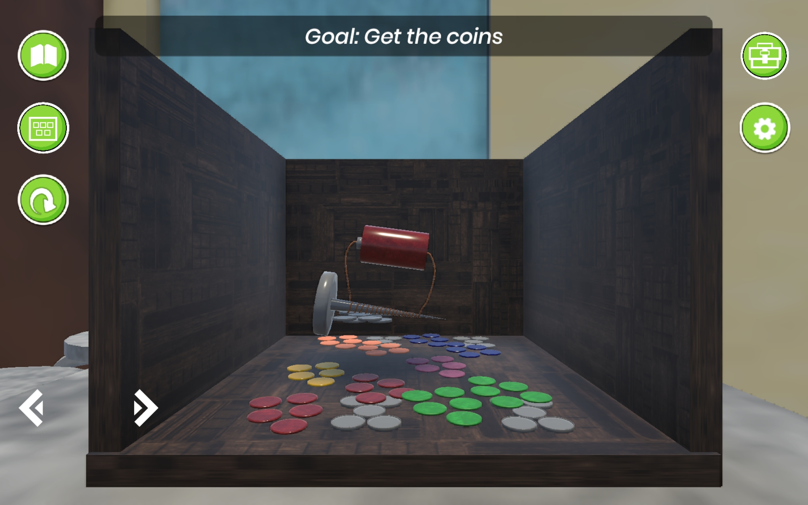
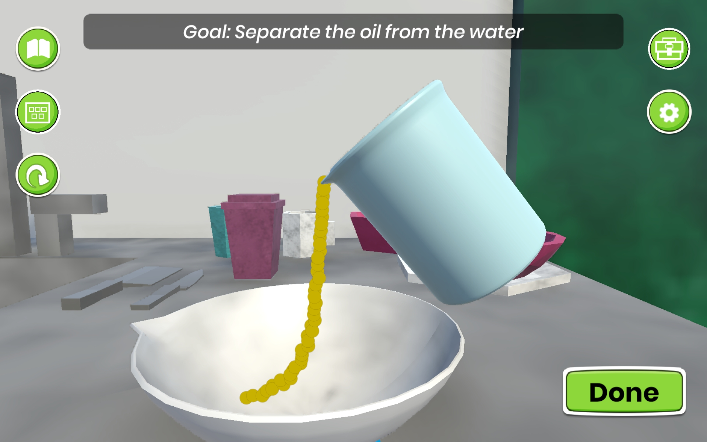
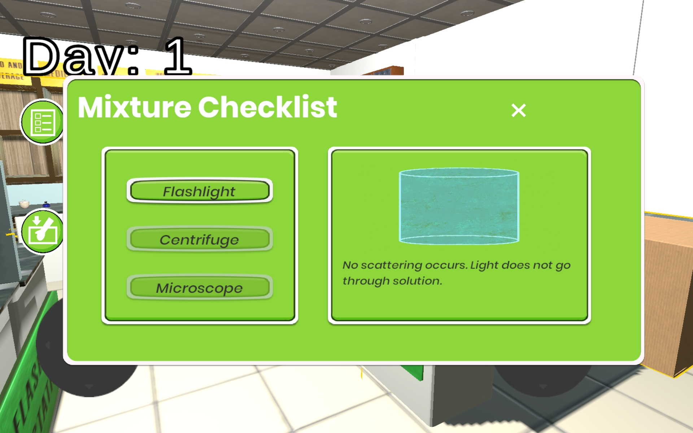
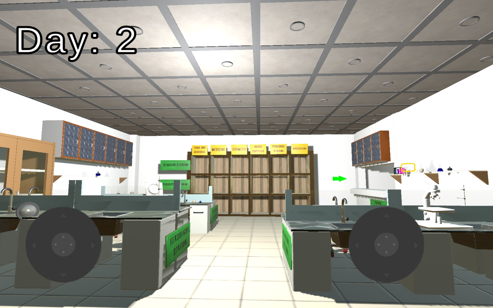

01
Laboratory Lockdown
Game-Based Learning Environment for Grade 6 Science




A 3D Unity educational game designed to help Grade 6 students learn mixtures through interactive gameplay, story-based tasks, and separation technique simulations. The project combined educational content, UX design, and gamification principles to create an engaging and interactive learning experience.